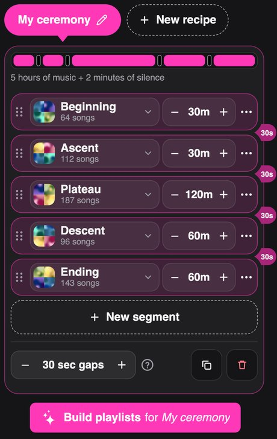
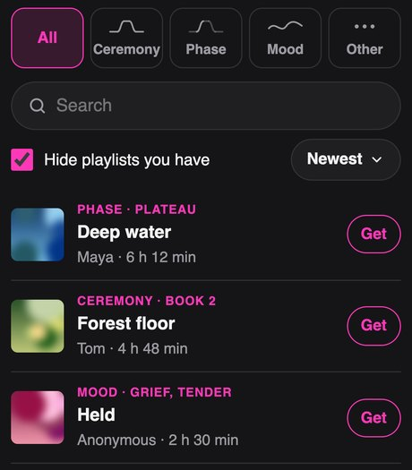
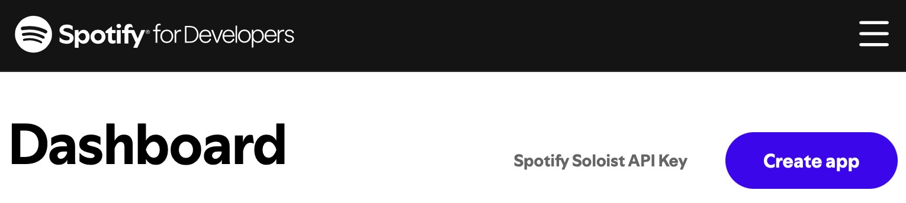
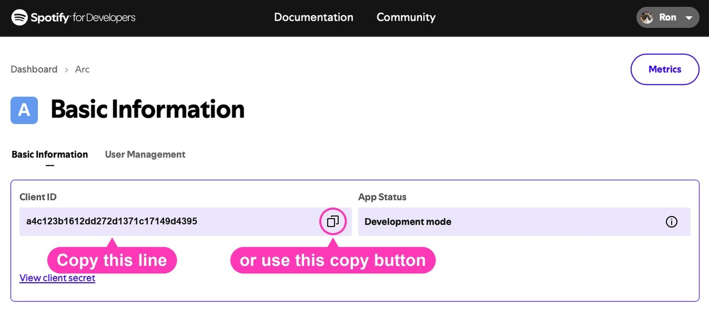

Arc
Arc
Ceremony playlist tools
for your Spotify library
Free tools for facilitators who play music in ceremonies, retreats and other long events. They work with your own Spotify playlists, and everything they make goes straight into your Spotify library.
Tools available now

Your ceremonies have an arc, and the music you play follows this arc. Describe this arc in a A recipe is a plan for one ceremony: which of your Spotify playlists to draw from, in what order, and for how many minutes each. Each row in the picture is one part of the arc. From one recipe, the builder can make as many playlists as your songs allow. and the builder makes new ceremony playlists from your existing Spotify playlists, with no song repeated across them.
Where it helps
- Returning clients hear new music. One recipe builds as many playlists as your music allows, with no song repeated across them.
- Weave in new music. Add songs to your music collection and rebuild to include them in all your ceremony playlists. With enough new songs, you may get more playlists than before.
- Quicker, even for a single playlist. No more hand-picking songs and adding up their lengths. The builder fills each part of the arc for you.

Find playlists other facilitators share, by ceremony, phase of a session or mood. Hear previews, then get your own private copy in Spotify. Share yours the same way, with your name or anonymously.
A one-time setup first
Arc reaches your Spotify through a small app of your own, made in Spotify's developer dashboard. It's free and takes a couple of minutes, once.
- 1Make your Spotify app. Step-by-step instructions, with pictures.
- 2Paste its Client ID into Arc.
- 3Sign in to Spotify. Then both tools are ready.
Spotify Premium is needed for the developer app. Works in any browser, easiest on a bigger screen.
About this app
What it does
Arc makes long playlists from your existing Spotify playlists. Describe the structure of the playlists you want to create, and this app builds as many complete playlists as your music allows, with songs picked at random and no song repeated across the playlists made from one recipe. Each playlist is created in your Spotify account, ready to play.
What it's good for
Ceremonies, retreats, workshops, and any long event where the music should follow an arc, such as arriving, deepening, and landing. Instead of steering a shuffle during the event or manually building a playlist ahead of time for each event, set the structure once and get multiple fresh, non-overlapping playlists. You can then use these playlists for subsequent events without ever repeating the same music.
How it works
- Connect to Spotify through a free developer app. This takes a few minutes to set up, but you’ll only need to do it once.
- Define your recipe(s): which of your playlists to draw from, in what order, and for how long.
- Build the playlists. This app shows you what it found and asks before it builds anything.
What you need
A Spotify Premium account (Spotify requires it for the free developer app) and some playlists of your own to draw from.
Reporting problems
If you run into a problem, choose Report a problem in the app menu.
Privacy
Your existing Spotify playlists are only read, never changed. Everything runs in this browser, and nothing about your music, such as playlist names or songs, goes anywhere except to you and Spotify. For the full details, see Privacy.
One-time setup
Have you done this setup before?
Either way, you will get clear step-by-step instructions. You will switch between this tab and Spotify's, so keep both open.
Something unexpected happened. Report this problem
-
Open the Spotify developer dashboard
(it will open in a new tab), log in with your Spotify Premium account, and press the Create app button.
Switch back to this tab any time you need to reference these instructions.

-
Fill in the form:
- App name:
Arc - App description:
Arc - Website:leave it blank
- Redirect URI:
- Press the Add button next to it.
- Which API/SDKs are you planning to use? Check Web API only. Leave the other boxes unchecked.
- Check the box agreeing to Spotify's terms, then press the Save button.
- Copy the Client ID shown on your new app's page.

-
Open the Spotify developer dashboard
(it will open in a new tab), log in, and press the app you made for Arc.
Switch back to this tab any time you need to reference these instructions.

- Copy the Client ID shown on its page.

Spotify may ask you to log in or to press Agree. If it does, press Agree to let this page connect.
What does all this actually do?
Spotify keeps your music private, so this page can only reach your playlists if you give it permission. Making a Spotify developer app inside your Spotify account is how you give this page that permission.
The Client ID works like a name tag. It tells Spotify who is asking for access, and Spotify then asks you to approve it. After that, this page can look at your playlists and make new ones in your account. Only you can use the app you made inside your Spotify account.
Your Client ID is not a secret. It stays in this browser and goes only to Spotify. You do this once. If you want to use Arc on another device, you won't need to create another app, just use the same Client ID.
What does all this actually do?
Spotify keeps your music private, so this page can only reach your playlists if you give it permission. The Spotify developer app you made previously is how you give this page that permission.
The Client ID works like a name tag. It tells Spotify who is asking for access, and Spotify then asks you to approve it. After that, this page can look at your playlists and make new ones in your account. Only you can use the app you made inside your Spotify account.
Your Client ID is not a secret. It stays in this browser and goes only to Spotify. To use Arc on another device, enter the same Client ID there. You won't need to create another app.
1. Connect to Spotify
Connecting...
1. Connect to Spotify
Something unexpected happened. Report this problem
Arc
Ceremony playlist tools for your Spotify library
2. Edit your recipes
You back your recipes up to this device yourself: , and at any time.
How should your recipes be saved?
Pick where your recipes live.
Each recipe is kept in a private playlist of its own, named like the recipe and ending in (recipe). The recipe is stored in that playlist's description, so please do not edit it.
Your recipes live on this device only. You back them up to a file when you choose, and restore from it when you need it.
How recipes work
A recipe describes one kind of playlist: which of your playlists to draw from, in what order, and for how long. The app makes as many playlists from a recipe as your songs allow, and no song repeats between them.
Segments
Each row is one stretch of music. Tap the playlist to choose it, and use the minus and plus buttons to set how many minutes it fills. Drag the dotted handle to change the order. Each segment typically lands within about 30 seconds of its target. Point at a row, or tap a piece of the bar at the top, to see which belongs to which. Add another with New segment.
Silence
The small tags hanging off the right side of the rows are silences. A silence adds time on top of your segment minutes, and can be used for effect or simply to tell a facilitator the music has moved into a new segment. To put the same silence between every two segments, set the length at the bottom of the recipe, beside Duplicate and Delete. Tap a tag to change that one silence. A tag with a changed length is pink, and Reset to default puts it back. To add a silence where there is none, use a segment's three dots.
Mixes
To blend two playlists in one segment, tap the three dots on that row and choose Add a mix. Pick the second playlist, then use the slider to set how much of each. In the bar at the top, a mixed segment shows as diagonal stripes in two shades of the accent color.
A recipe has a size limit, so that it can always be saved. When a recipe is full, New segment and Add a mix are greyed out, and a change that would make it longer is not made, until something is removed.
Names
The name of a recipe is also the name of the playlists it makes: a recipe called "Warm focus" makes "Warm focus 1", "Warm focus 2", and so on. Give every recipe a different name. When you build playlists again, this app treats playlists that match a recipe's name as its own and offers to replace them.
3. Build playlists
Builds playlists for the selected recipe. You can see the plan first, and nothing is built until you confirm.
Building playlists needs a working connection to Spotify.
4. Back up manually to this device (optional)
Your recipes live only on this device. Clearing your browser data would erase them. A manual backup keeps a copy so you can restore them if needed.
Everyone is welcome to use this app. If it’s been helpful, please give whatever feels right to you.